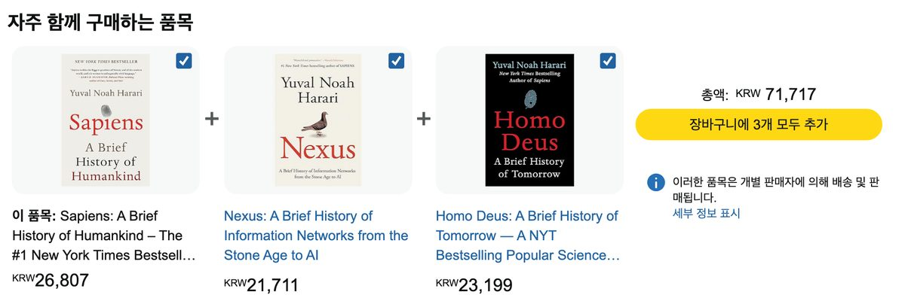

연관 분석 · 우리 학교 급식에서 규칙 찾기
“제육볶음이 나오는 날 배추김치도 나올까?” 지지도·신뢰도·향상도를 손으로 계산한 뒤 당곡고 급식 데이터에서 메뉴의 동시 등장 패턴을 찾습니다. 세 지표의 차이를 이해하고, 표본에서 찾은 규칙을 어디까지 해석할 수 있는지 판단합니다.
이 수업에서 사용하는 급식 데이터는 기준 기간인 2026년 9월 30일까지의 중식입니다. 손계산과 검산의 기준은 4절에 연결한 184일 저장본입니다.
0. 오늘의 목표
연관 분석은 함께 나타나는 항목의 패턴을 찾습니다. 자주 나오는 메뉴는 다른 여러 메뉴와도 자주 겹칩니다. 따라서 동시 등장 횟수뿐 아니라 각 메뉴의 기본 등장률도 함께 살펴야 합니다. 하루 중식 식단을 한 건으로 보고, 두 메뉴의 관계를 비교합니다.
- 지지도·신뢰도·향상도의 분모가 각각 무엇인지 말할 수 있다.
- 같은 두 메뉴라도 규칙의 방향이 바뀌면 신뢰도가 달라진다는 것을 설명할 수 있다.
- 향상도를 결과 메뉴의 기본 등장률과 비교해 규칙을 판정할 수 있다.
여러분이 편의점 본사의 상품기획 담당자라고 가정합니다. 하루에 쌓이는 영수증은 수백만 장입니다. 그 안에서 한 가지만 확인합니다. 박카스가 찍힌 영수증에는 무엇이 함께 찍혀 있는가. GS25가 얻은 답은 1위 얼음컵, 2위 사이다였습니다. 이미 많은 손님이 세 가지를 따로 사서 직접 섞어 마시고 있었습니다. GS25는 이 결과를 동아제약에 가져가 세 가지를 합친 음료를 제안했고, 2025년 6월 25일 '얼박사'라는 이름으로 출시했습니다. 두 달 만에 누적 판매량 278만 개를 기록했습니다.
여기서 확인해 둘 것이 있습니다. "함께 많이 팔린 1위"는 아직 한 가지 숫자일 뿐입니다. 얼음컵은 원래 거의 모든 음료와 함께 팔리는 상품일 수도 있습니다. 그 구분을 하려면 숫자가 하나 더 필요합니다. 오늘 우리가 세는 것은 영수증이 아니라 당곡고 급식 184일입니다. 어느 반찬이 어느 반찬과 함께 나오는지부터 세어 봅니다.
출처: ZDNet Korea 2025년 6월 24일, 파이낸셜뉴스 2025년 9월 24일. 기사가 밝힌 것은 함께 소비하는 다빈도 상품 1위와 2위까지이며, GS25가 어떤 지표를 계산했는지는 공개되지 않았습니다.
- 문제. 당곡고 중식 184일 가운데 배추김치가 나온 날은 며칠일까요.
102일입니다. 184일의 약 55%이므로 이틀에 한 번 이상 나옵니다. 그렇다면 "제육볶음이 나오는 날에는 배추김치가 나온다"는 말은 알아낼 가치가 있는 규칙입니까. 오늘은 그것을 판단하는 숫자 셋을 계산합니다.
1. 개념 이해 — 교과서의 세 숫자
"연관 분석(association analysis)이란 데이터베이스에서 그 안에 존재하는 항목 간의 유용한 연관 규칙을 발견하는 것이다." (157쪽)
"연관 분석은 고객의 구매 내역을 분석하는 데 흔히 쓰여 '장바구니 분석'이라고도 한다." (157쪽)
→ 오늘은 급식 184일치를 장바구니로 삼아, 같은 날 함께 나온 메뉴의 규칙을 찾습니다.
당곡고 중식 184일에서 괄호를 제외하고 센 메뉴는 506종이고, 두 메뉴를 짝지으면 3,146가지가 됩니다. 그 가운데 어느 짝이 볼 만한지를 세 숫자로 정합니다.
"지지도는 두 개의 사건이 동시에 발생하는 비율이며 …" (159쪽)
"신뢰도는 규칙의 결과 부분이 발생할 가능성을 측정한다." (159쪽)
"두 사건 A와 B가 서로 영향을 주지 않고 독립적으로 발생한다면, 향상도는 1에 가까워진다." (160쪽)
→ 지지도는 전체에서 함께 나온 비율, 신뢰도는 A가 나온 경우 중 B도 나온 비율, 향상도는 그 신뢰도를 B의 기본 등장률로 나눈 값입니다.
| 숫자 | 계산식 (N: 전체 일수) | 묻는 말 |
|---|---|---|
| 지지도 | A·B 동시 일수 ÷ N | 이 조합, 다룰 만큼 자주 나오는가 |
| 신뢰도 | A·B 동시 일수 ÷ A 등장 일수 | A가 나오면 B도 나오는가 |
| 향상도 | 신뢰도 ÷ (B 등장 일수 ÷ N) | A가 있을 때 B의 등장률은 기본 등장률의 몇 배인가 |
"지지도는 두 개의 사건이 동시에 발생하는 비율이며 …" (교과서 159쪽)
세 숫자는 모두 동시 등장 일수에서 출발하지만 무엇으로 나누는지가 다릅니다. 지지도는 전체 일수로, 신뢰도는 조건 메뉴 A가 나온 일수로 나눕니다. 향상도는 그 신뢰도를 다시 결과 메뉴 B의 기본 등장률로 나눕니다. 분모가 다르므로 세 숫자는 서로 대신할 수 없습니다.
향상도가 1이면 A가 나온 날의 B 비율과 B의 기본 등장률이 같다는 뜻입니다. 1보다 크면 A가 나온 날에 B가 더 자주 나왔고, 1보다 작으면 덜 나왔습니다.
교과서의 {삼겹살} → {쌈채소} 규칙은 향상도가 1.67입니다. 삼겹살을 산 거래에서 쌈채소를 산 비율이 전체 거래의 쌈채소 구매 비율의 약 1.67배라는 뜻입니다.
2. 손계산이 먼저 — 활동지 기본 문제
오늘의 계산은 활동지에 손으로 적습니다. 기본 문제에는 규칙이 셋 있습니다. 같은 스무 날의 기록을 세 규칙으로 계산해 보고, 세 지표가 각각 무엇을 보여 주는지 비교합니다. 활동지의 수는 계산이 떨어지도록 고른 값이며 실제 관측값이 아닙니다. 나눗셈이 모두 두 자리 소수에서 끝나 계산기 없이 풀 수 있습니다. 연습 문제(매점 묶음 할인)는 같은 순서로 혼자 푸는 과제입니다.
이 차시의 위젯은 선생님이 앞에서 보여 주는 시연용입니다. 화면이 답을 대신 계산해 주면 계산 순서가 손에 남지 않습니다. 학생은 활동지에 손으로 적고, 다 푼 뒤에 화면의 값과 대조합니다.
| 단계 | 활동지에 적는 것 | 확인할 점 |
|---|---|---|
| ① 횟수 | 앞 항목·뒤 항목·함께 나온 횟수 | 세 수를 먼저 적어야 나머지가 나옵니다. |
| ② 지지도 | 함께 나온 횟수 ÷ 전체 | 이 조합이 얼마나 자주 있는 일인지를 봅니다. |
| ③ 신뢰도 | 함께 나온 횟수 ÷ 앞 항목의 횟수 | 분모가 앞 항목입니다. 지지도와 분모가 다릅니다. |
| ④ 등장률 | 뒤 항목의 횟수 ÷ 전체 | 비교의 기준이 되는 값입니다. |
| ⑤ 향상도 | 신뢰도 ÷ 등장률 | 1이면 신뢰도와 뒤 항목의 등장률이 같습니다. 분모는 뒤 항목의 등장률입니다. |
| ⑥ 판단 | 어느 규칙을 고를지와 그 까닭 | 지표가 서로 다른 규칙을 가리키면 문제의 목적을 먼저 정하고 그에 맞는 지표를 근거로 삼습니다. |
규칙 A를 풀기 전에, 제육볶음이 나온 날에 배추김치도 나올 비율이 얼마일 것 같은지 숫자 하나를 먼저 적습니다. ⑤단계에서 그 숫자와 다시 만납니다.
지지도만 보면 이기는 규칙과 향상도로 보면 이기는 규칙이 서로 다릅니다. 순서를 지켜 지지도부터 구하고, 신뢰도에서 순위가 뒤집히는 것을 확인한 뒤 향상도로 넘어갑니다. 향상도를 먼저 구하면 이 차시가 보여 주려는 것이 사라집니다.
세 번째 규칙 배추김치 → 미역국은 향상도가 1보다 작게 나옵니다. 값을 구한 뒤, 배추김치가 나온 날의 미역국 비율과 미역국의 기본 등장률을 나란히 놓고 한 문장으로 적습니다.
③단계에는 방향 바꾸기 행이 있습니다. 규칙 A와 규칙 B의 앞뒤를 바꾸어 신뢰도를 다시 구하고, 달라진 값과 그대로인 값을 각각의 분모와 함께 적습니다.
세 규칙 모두 그럴듯해 보이지만, 향상도를 구하면 판단이 달라집니다. 활동지에서 만든 이 판정 순서를 그대로 가지고 우리 학교 급식으로 넘어갑니다.
A → B와 B → A는 다른 규칙입니다. 신뢰도의 분모가 앞에 오는 메뉴가 나온 일수이기 때문입니다. 184일 저장본으로 확인합니다. 순대국 5일, 석박지 20일, 함께 나온 날 5일이므로 순대국 → 석박지의 신뢰도는 5÷5 = 1.00이고, 석박지 → 순대국의 신뢰도는 5÷20 = 0.25입니다. 활동지 기본 문제도 같은 두 메뉴를 다루지만 그쪽은 계산이 떨어지도록 고른 스무 날짜리 설계값이므로 수가 다릅니다.
반면 지지도와 향상도는 방향을 바꾸어도 같습니다. 지지도의 분모는 전체 일수 하나뿐입니다. 향상도는 두 방향의 계산이 결국 같은 값이 됩니다. 순대국 → 석박지는 1.00 ÷ (20÷184) = 9.20이고, 석박지 → 순대국은 0.25 ÷ (5÷184) = 9.20입니다.
그러므로 "B가 나오는 날은 A가 나온다"라고 말하려면 그 문장의 방향에 해당하는 신뢰도를 확인해야 합니다.
손으로 구한 값을 아래 그림의 막대 두 개와 맞춰 봅니다. [방향 바꾸기] 버튼이 활동지의 방향 바꾸기 행과 같은 계산입니다.
3. 먼저 예상을 적습니다
앱을 실행하기 전에, 같은 날 함께 나올 것 같은 메뉴 쌍 세 개와 그렇게 생각한 까닭을 적습니다. 급식을 먹으면서 알게 된 것이면 충분합니다. 4절에서 이 세 쌍을 결과 표에서 찾아 숫자를 채웁니다.
| 구분 | 예상한 메뉴 쌍 (조건 → 결과) | 그렇게 생각한 까닭 |
|---|---|---|
| 예상 ① | ||
| 예상 ② | ||
| 예상 ③ |
4. 실습 ① — 내 앱이 같은 값을 내는가
DG푸드는 이 수업에서만 사용하는 가상의 급식 납품 회사입니다. 분석에 사용하는 급식 기록은 당곡고에 실제로 나온 식단입니다.
식단팀은 어느 반찬이 어느 반찬과 함께 나가는지를 알아야 재료를 미리 준비하고 안내를 붙일 수 있습니다.
인턴은 찾은 규칙을 그대로 사용하지 않습니다. 어느 규칙에 재료와 진열 공간을 걸지 근거를 들어 보고합니다.
손으로 구한 세 규칙을 이번에는 앱으로 확인합니다. 활동지의 스무 날은 손으로 계산하기 쉽도록 고른 값이고, 앱은 당곡고 급식 기록으로 같은 세 지표를 만듭니다. 손계산과 화면의 값이 같은 방법으로 나온 것인지 대조하는 것이 이 절에서 할 일입니다.
앱은 5차시의 인증키로 급식 API에서 2025년 9월 1일부터 2026년 9월 30일까지의 중식을 조회합니다. 기간이 같아도 원데이터의 수정·추가에 따라 결과가 달라질 수 있습니다. 본문 손계산과 검산의 기준은 184일 급식 저장본입니다. 실행 결과와 다르면 조회 시점과 일수, 메뉴 정리 기준부터 확인합니다.
| MLSV_YMD | DDISH_NM |
|---|---|
| 20250902 | 친환경현미밥 <br/>근대된장국 (5.6)<br/>오이상추무침 (6.13)<br/>제육볶음 (6.10.13)<br/>… |
{ 친환경현미밥, 근대된장국, 제육볶음, … }이번에는 아무 기준도 걸지 않고 규칙을 전부 봅니다. 표의 맨 위가 어떤 규칙으로 채워지는지가 5절의 출발점입니다.
- ① 샘플 프롬프트 — 그대로 붙여 넣기
① 프롬프트
"급식 규칙 찾기" 스트림릿 앱을 만들어 줘. 파일 이름은 main.py. 당곡고 급식을 나이스 급식 API로 받아서 하루 중식 식단을 장바구니 하나로 보고, 같은 날 함께 나온 메뉴 쌍을 찾아 줘. - 인증키는 비밀 금고에 NEIS_API_KEY라는 이름으로 넣어 뒀어. 코드에 직접 적지 말고 거기서 꺼내 써. - 기간은 2025년 9월 1일부터 2026년 9월 30일까지, 중식만. 조회된 모든 페이지를 받아 날짜별로 한 건씩 세어 줘. - 조회된 전체 건수보다 적게 받았으면 계산하지 말고 안내 문구를 보여 줘. - 하루 식단을 메뉴별로 나누고, 메뉴 이름의 괄호와 그 안의 내용은 전부 제외해 세 줘. - 화면 맨 위에 조회 기간, 분석한 날 수, 메뉴 종류 수, 같은 날 함께 나온 적이 있는 메뉴 쌍의 수를 적어 줘. - 결과 표의 열은 조건, 결과, 동시, 지지도, 신뢰도, 향상도로 하고 향상도가 높은 순으로 정렬해 줘. 이번에는 걸러 내지 말고 전부 보여 줘. - 메뉴 이름을 고르면 그 메뉴가 들어간 규칙만 모아 볼 수 있게 해 줘. - 향상도 상위 열 개는 plotly로 가로 막대그래프도 그려 줘. 메뉴로 좁히면 그래프도 함께 좁혀 줘. - 필요한 라이브러리 목록(requirements.txt)도 같이 줘. 버전 숫자 없이 이름만. ──── 아래는 나이스 교육정보 개방 포털 문서에서 복사한 부분 ──── [급식식단정보] 요청 주소: https://open.neis.go.kr/hub/mealServiceDietInfo 요청변수: Type=json · 글자는 UTF-8 · KEY(인증키) · ATPT_OFCDC_SC_CODE=B10(서울특별시교육청) · SD_SCHUL_CODE=7010073(당곡고등학교) · MMEAL_SC_CODE=2(중식) · MLSV_FROM_YMD=20250901, MLSV_TO_YMD=20260930 · pSize(한 번에 받을 행 수, 상한 1000) · pIndex(쪽 번호, 1부터) 응답 구조: mealServiceDietInfo의 첫 번째 상자 head 안에 list_total_count(전체 건수), 두 번째 상자 안 row 목록에 하루마다 MLSV_YMD(급식일자, 하이픈 없는 여덟 자리) · DDISH_NM(식단 이름, 메뉴 사이 구분은 <br/>, 괄호 안은 알레르기 번호이거나 (자율)·(대)·(소스) 같은 표기)
선생님이 실행해 확인한 예시 코드
main.py와 requirements.txt, 두 파일로 저장합니다. 급식은 날마다 쌓이므로 날 수와 메뉴 종류 수, 규칙의 수는 실행하는 날에 따라 달라집니다.
main.py — 여기까지가 전체# main.py — 급식 규칙 찾기: 같은 날 함께 나온 메뉴 쌍을 센다 import re from collections import Counter from itertools import combinations import pandas as pd import plotly.express as px import requests import streamlit as st st.title("🍚 급식 규칙 찾기") @st.cache_data(ttl=3600) def load_baskets(api_key): rows, page = [], 1 params = {"Type": "json", "KEY": api_key, "pSize": 1000, "ATPT_OFCDC_SC_CODE": "B10", "SD_SCHUL_CODE": "7010073", "MMEAL_SC_CODE": "2", "MLSV_FROM_YMD": "20250901", "MLSV_TO_YMD": "20260930"} while True: response = requests.get("https://open.neis.go.kr/hub/mealServiceDietInfo", params={**params, "pIndex": page}, timeout=20) response.raise_for_status() data = response.json() if "mealServiceDietInfo" not in data: raise ValueError("급식을 조회하지 못했습니다.") blocks = data["mealServiceDietInfo"] head = next(block["head"] for block in blocks if "head" in block) total = next(item["list_total_count"] for item in head if "list_total_count" in item) chunk = next((block["row"] for block in blocks if "row" in block), []) rows.extend(chunk) if len(rows) >= total: break if not chunk: # 전체 건수를 채우기 전에 빈 쪽이 오면 중단한다 raise ValueError("전체 건수보다 적게 받았습니다.") page += 1 days = {} for row in rows: basket = days.setdefault(row["MLSV_YMD"], set()) for dish in re.split(r"<br\s*/?>", row["DDISH_NM"], flags=re.I): name = re.sub(r"\([^)]*\)", "", dish).strip() # 괄호와 그 안의 내용은 제외한다 if name: basket.add(name) return [sorted(basket) for basket in days.values() if basket] try: api_key = st.secrets["NEIS_API_KEY"] except Exception: st.error("비밀 금고에 NEIS_API_KEY를 설정하세요. 5차시 안내를 확인합니다.") st.stop() if not api_key.strip(): st.error("인증키가 비어 있습니다.") st.stop() try: baskets = load_baskets(api_key) except (requests.RequestException, ValueError, KeyError, StopIteration): st.error("급식을 모두 조회하지 못했습니다. 인증키·조회 조건·연결 상태를 확인하세요.") st.stop() if not baskets: st.info("조회 기간에 분석할 중식 데이터가 없습니다.") st.stop() n = len(baskets) single = Counter(item for b in baskets for item in b) # 메뉴가 나온 날 수 pair = Counter(c for b in baskets for c in combinations(b, 2)) # 두 메뉴가 함께 나온 날 수 rows = [] for (a, b), together in pair.items(): for x, y in [(a, b), (b, a)]: # 한 쌍에서 두 방향의 규칙이 나온다 rows.append({"조건": x, "결과": y, "동시": together, "지지도": round(together / n, 3), "신뢰도": round(together / single[x], 3), "향상도": round((together / single[x]) / (single[y] / n), 2)}) rules = pd.DataFrame(rows, columns=["조건", "결과", "동시", "지지도", "신뢰도", "향상도"]) rules = rules.sort_values("향상도", ascending=False) st.caption(f"조회 2025-09-01~2026-09-30 · 급식 {n}일 · 메뉴 {len(single)}종 · " f"메뉴 쌍 {len(pair):,}개 · 규칙 {len(rules):,}개") 메뉴 = st.selectbox("메뉴로 좁혀 보기", ["(전체)"] + sorted(single)) 보기 = rules if 메뉴 == "(전체)" else rules[(rules["조건"] == 메뉴) | (rules["결과"] == 메뉴)] st.dataframe(보기, width="stretch", hide_index=True) top = 보기.head(10).copy() top["규칙"] = top["조건"] + " → " + top["결과"] fig = px.bar(top, x="향상도", y="규칙", orientation="h", text="향상도") fig.update_layout(yaxis={"categoryorder": "total ascending"}, height=420) st.plotly_chart(fig, use_container_width=True)두 번째 파일 —streamlit pandas requests plotly
- ② AI가 준 코드 — 실행하고 표를 읽는다
표가 나타나면 신뢰도 순으로 한 번, 향상도 순으로 한 번 정렬해 봅니다. 두 순위가 서로 다르다는 것이 오늘의 발견입니다.
프롬프트에는 분석 대상, 메뉴 정리 기준, 원하는 결과를 명확히 적습니다. AI가 계산 코드를 작성하더라도 메뉴가 올바르게 나뉘었는지와 분모가 맞는지는 확인해야 합니다. 대표 규칙 몇 개를 직접 세어 보면 오류를 찾는 데 도움이 됩니다.
손계산한 규칙을 앱에서 찾습니다
메뉴로 좁혀 보기에서 제육볶음을 고르고, 활동지 규칙 A와 같은 규칙을 표에서 찾습니다. 제육볶음으로 좁히면 규칙이 86개라 향상도 순에서는 규칙 A가 아래쪽에 있습니다. 동시 등장 열로 정렬하면 맨 위에 옵니다. 순대국으로도 같은 일을 합니다. 등장 칸에는 앞 메뉴와 뒤 메뉴가 각각 나온 일수를, 판정 칸에는 향상도를 기본 등장률과 비교한 결과를 적습니다.
활동지의 수는 계산이 떨어지도록 고른 설계값이므로 값이 똑같지는 않습니다. 규칙 A는 신뢰도가 손계산과 같게 나오지만 향상도는 다릅니다. 활동지의 스무 날에서는 배추김치의 기본 등장률이 실제보다 높게 설계되어 있기 때문입니다. 분모가 무엇인지가 같은지를 확인합니다.
손계산의 세 번째 규칙 배추김치 → 미역국은 앱에서 찾지 않습니다. 저장본에서 미역국은 종류별로 나뉘어 있어 그 이름의 규칙이 표에 없습니다. 이 규칙은 향상도가 1보다 작은 경우를 손으로 보기 위한 설계값입니다.
| 규칙 | 등장 (앞 · 뒤) | 동시 | 신뢰도 | 향상도 | 판정 |
|---|---|---|---|---|---|
| 제육볶음 → 배추김치 | |||||
| 순대국 → 석박지 |
여기에 적은 두 값을 활동지 끝의 화면과 대조하기 표에 옮겨 손계산과 맞춰 봅니다. AI가 계산한 숫자를 스스로 검산할 수 있는 사람이 됩니다.
화면의 숫자를 옮겨 적습니다
앞에서 적은 예상 세 쌍을 결과 표에서 찾아 나머지 칸을 채우고, 향상도 순으로 정렬했을 때 맨 위 규칙 두 개를 덧붙입니다. 예상한 쌍이 표에 없으면 동시 등장 일수 칸에 '표에 없음'이라고 적습니다.
| 구분 | 규칙 (조건 → 결과) | 동시 | 신뢰도 | 기본 등장률 | 향상도 | 판정 |
|---|---|---|---|---|---|---|
| 예상 ① | ||||||
| 예상 ② | ||||||
| 예상 ③ | ||||||
| 화면 1위 | ||||||
| 화면 2위 |
- 신뢰도 순으로 정렬했을 때의 1위와 향상도 순으로 정렬했을 때의 1위는 같은 규칙입니까. 두 순위를 나란히 적어 봅니다.
- 향상도가 가장 큰 규칙의 동시 등장 일수는 며칠입니까. 그 규칙이 며칠에서 나온 값인지 표에 함께 적습니다.
여기까지 적은 표 두 개를 폼 Ⅲ-04d 과제에 그대로 사용합니다.
5. 실습 ③ — 최소 기준과 함께 안 나오는 짝
교과서 162쪽은 규칙 후보를 추리기 전에 최소 지지도를 먼저 정하는 절차를 다룹니다.
최소 지지도는 규칙 후보로 남길 최소 등장 비율입니다. 이번 실습이 사용하는 기준은 비율이 아니라 동시 등장 횟수입니다. 두 기준은 단위가 다릅니다. 184일 저장본에서 5회는 지지도 5 ÷ 184 ≈ 0.027에 해당하지만, 조회한 일수가 달라지면 같은 5회가 다른 지지도가 됩니다.
아래 그림에서 기준을 옮겨 보고, 이어서 같은 일을 자기 앱에서 합니다.
- ③ 개선 프롬프트 — 최소 기준을 손으로 움직인다
③ 개선
앞 코드에 이어서 두 가지를 더해 줘. 바뀐 main.py 전체를 다시 줘. 바뀐 부분만 주지 말고. - 동시에 나온 날 수의 최소 기준을 1부터 10까지 슬라이더로 고르게 하고 기본값은 5로 해 줘. 고른 값보다 적게 겹친 규칙은 표에서 빼 줘. - 슬라이더를 움직이면 표에 남은 규칙 수를 한 줄로 적어 줘. - 향상도가 0.9와 1.1 사이인 규칙에는 "기본 등장률과 비슷함"이라고 표시해 줘. - 표 아래에 "함께 나온 적 없는 짝" 화면을 따로 만들어 줘. 메뉴 하나를 고르면, 그 메뉴와 같은 날 한 번도 함께 나오지 않았으면서 혼자서는 열흘 이상 나온 메뉴를 등장 일수가 많은 순으로 보여 주고, 고른 메뉴가 나온 날 수도 함께 적어 줘. 이 메뉴 고르기는 위의 좁혀 보기와 다른 이름으로 만들어 줘.
선생님이 실행해 확인한 예시 코드
여기까지 만든 main.py 전체입니다. 파일을 통째로 바꿔 저장합니다.
main.py — 여기까지가 전체# main.py — 급식 규칙 찾기: 같은 날 함께 나온 메뉴 쌍을 센다 import re from collections import Counter from itertools import combinations import pandas as pd import plotly.express as px import requests import streamlit as st st.title("🍚 급식 규칙 찾기") @st.cache_data(ttl=3600) def load_baskets(api_key): rows, page = [], 1 params = {"Type": "json", "KEY": api_key, "pSize": 1000, "ATPT_OFCDC_SC_CODE": "B10", "SD_SCHUL_CODE": "7010073", "MMEAL_SC_CODE": "2", "MLSV_FROM_YMD": "20250901", "MLSV_TO_YMD": "20260930"} while True: response = requests.get("https://open.neis.go.kr/hub/mealServiceDietInfo", params={**params, "pIndex": page}, timeout=20) response.raise_for_status() data = response.json() if "mealServiceDietInfo" not in data: raise ValueError("급식을 조회하지 못했습니다.") blocks = data["mealServiceDietInfo"] head = next(block["head"] for block in blocks if "head" in block) total = next(item["list_total_count"] for item in head if "list_total_count" in item) chunk = next((block["row"] for block in blocks if "row" in block), []) rows.extend(chunk) if len(rows) >= total: break if not chunk: # 전체 건수를 채우기 전에 빈 쪽이 오면 중단한다 raise ValueError("전체 건수보다 적게 받았습니다.") page += 1 days = {} for row in rows: basket = days.setdefault(row["MLSV_YMD"], set()) for dish in re.split(r"<br\s*/?>", row["DDISH_NM"], flags=re.I): name = re.sub(r"\([^)]*\)", "", dish).strip() # 괄호와 그 안의 내용은 제외한다 if name: basket.add(name) return [sorted(basket) for basket in days.values() if basket] try: api_key = st.secrets["NEIS_API_KEY"] except Exception: st.error("비밀 금고에 NEIS_API_KEY를 설정하세요. 5차시 안내를 확인합니다.") st.stop() if not api_key.strip(): st.error("인증키가 비어 있습니다.") st.stop() try: baskets = load_baskets(api_key) except (requests.RequestException, ValueError, KeyError, StopIteration): st.error("급식을 모두 조회하지 못했습니다. 인증키·조회 조건·연결 상태를 확인하세요.") st.stop() if not baskets: st.info("조회 기간에 분석할 중식 데이터가 없습니다.") st.stop() n = len(baskets) single = Counter(item for b in baskets for item in b) # 메뉴가 나온 날 수 pair = Counter(c for b in baskets for c in combinations(b, 2)) # 두 메뉴가 함께 나온 날 수 rows = [] for (a, b), together in pair.items(): for x, y in [(a, b), (b, a)]: # 한 쌍에서 두 방향의 규칙이 나온다 rows.append({"조건": x, "결과": y, "동시": together, "지지도": round(together / n, 3), "신뢰도": round(together / single[x], 3), "향상도": round((together / single[x]) / (single[y] / n), 2)}) rules = pd.DataFrame(rows, columns=["조건", "결과", "동시", "지지도", "신뢰도", "향상도"]) rules["판정"] = rules["향상도"].apply(lambda v: "기본 등장률과 비슷함" if 0.9 <= v <= 1.1 else "") rules = rules.sort_values("향상도", ascending=False) st.caption(f"조회 2025-09-01~2026-09-30 · 급식 {n}일 · 메뉴 {len(single)}종 · " f"메뉴 쌍 {len(pair):,}개 · 규칙 {len(rules):,}개") 기준 = st.slider("최소 동시 등장 일수", 1, 10, 5) # 이 일수보다 적게 겹친 규칙은 표에서 뺀다 걸러낸규칙 = rules[rules["동시"] >= 기준] st.write(f"동시에 나온 날이 {기준}일 이상인 규칙은 {len(걸러낸규칙):,}개입니다.") 메뉴 = st.selectbox("메뉴로 좁혀 보기", ["(전체)"] + sorted(single)) 보기 = 걸러낸규칙 if 메뉴 == "(전체)" else 걸러낸규칙[(걸러낸규칙["조건"] == 메뉴) | (걸러낸규칙["결과"] == 메뉴)] if 보기.empty: st.info("조건에 맞는 규칙이 없습니다. 최소 동시 등장 일수를 낮춰 봅니다.") else: st.dataframe(보기, width="stretch", hide_index=True) top = 보기.head(10).copy() top["규칙"] = top["조건"] + " → " + top["결과"] fig = px.bar(top, x="향상도", y="규칙", orientation="h", text="향상도") fig.update_layout(yaxis={"categoryorder": "total ascending"}, height=420) st.plotly_chart(fig, use_container_width=True) st.subheader("함께 나온 적 없는 짝") 고른메뉴 = st.selectbox("메뉴 고르기", sorted(single), key="없는짝") 같이나온메뉴 = {y for (a, b) in pair for x, y in [(a, b), (b, a)] if x == 고른메뉴} 없는짝 = [{"메뉴": 이름, "나온 날": 날수} for 이름, 날수 in single.items() if 이름 != 고른메뉴 and 이름 not in 같이나온메뉴 and 날수 >= 10] # 혼자서는 열흘 이상 나온 메뉴만 st.write(f"{고른메뉴} · 나온 날 {single[고른메뉴]}일 · 함께 나온 적 없는 메뉴 {len(없는짝)}종") if not 없는짝: st.info("열흘 이상 나오면서 한 번도 함께 나오지 않은 메뉴가 없습니다.") else: 표 = pd.DataFrame(없는짝).sort_values("나온 날", ascending=False) st.dataframe(표, width="stretch", hide_index=True)
슬라이더를 1로 내려 봅니다. 표 맨 위의 규칙은 며칠에서 나온 값입니까. 기준을 하나씩 올리며 표에 남은 규칙 수를 적습니다.
| 최소 동시 등장 기준 | 표에 남은 규칙 수 |
|---|---|
| 1일 | |
| 2일 | |
| 3일 | |
| 5일 | |
| 10일 |
기준을 1일에서 2일로 한 칸 올렸을 때 규칙이 얼마나 줄어드는지 봅니다. 그 한 칸에서 빠진 규칙은 어떤 규칙입니까.
다음은 함께 나온 적 없는 짝 화면입니다. 배추김치를 고르고, 표시된 메뉴 이름을 적습니다.
| 확인할 것 | 적는 값 |
|---|---|
| 배추김치가 나온 날 수 | |
| 배추김치와 한 번도 함께 나오지 않은 메뉴 (혼자 열흘 이상 나온 것) |
- 적어 낸 메뉴들의 공통점을 한 문장으로 적습니다.
- 그 메뉴들이 모두 김치라면, 급식실은 하루에 김치를 몇 종류 내고 있다고 볼 수 있습니까. 데이터에서 읽어 낸 운영 방침을 한 문장으로 적습니다.
- 급식이 왜 그렇게 짜여 있다고 생각합니까. 급식을 먹어 온 경험과 연결해 적습니다.
- 이 짝들의 향상도는 얼마입니까. 동시 등장 일수를 근거로 답합니다.
자기 반이 좋아하는 메뉴 하나를 골라 같은 화면을 봅니다. 함께 나온 적 없는 짝이 김치처럼 한 갈래로 묶입니까, 아니면 흩어져 있습니까.
6. 정리 — 교과서와 급식이 만나는 대목
지지도는 조합의 빈도를, 신뢰도는 조건부 비율을, 향상도는 기본 등장률과의 비율을 나타냅니다. 세 지표를 함께 보고 관측 기간과 등장 횟수도 기록합니다.
오늘 확인한 것을 한 문장으로 줄이면 이렇습니다. 신뢰도가 높다고 향상도가 높지는 않습니다. 뒤 메뉴가 원래 거의 날마다 나오는 메뉴라면 신뢰도는 저절로 높아지지만 향상도는 1 언저리에 머뭅니다. 그래서 두 숫자를 함께 읽습니다.
향상도가 크게 나온 규칙도 앞 메뉴가 뒤 메뉴의 등장을 일으켰다는 인과관계의 증명은 아닙니다. 식단 구성 방침 등 다른 요인이 두 메뉴에 함께 작용했을 수 있습니다.
팀장이 "얼음컵이 1위니 얼음컵으로 가자"고 한다면, 여러분은 어느 숫자를 더 보자고 하겠습니까. 그 숫자가 무엇을 분모로 삼는지도 함께 말합니다.
오늘은 급식 기록을 날짜별로 묶어 규칙을 찾았습니다. 다음 시간에는 두 번째 모델을 만듭니다. 7차시에는 숫자를 예측했고, 이번에는 예·아니오를 예측합니다. 데이터는 급식도 영화도 아닌 새 데이터입니다.
더 알아보기 — 실제 사례
연관 분석이 실제로 사용된 곳
세 지표는 교과서 안에서만 사용하는 계산이 아닙니다. 실제 매장과 상품 페이지에서도 함께 팔린 기록을 바탕으로 진열과 추천 후보를 정합니다.
| 사례 | 무엇을 계산했나 | 세 지표로 보면 |
|---|---|---|
| 허리케인 직전의 딸기 팝타르트 | 2004년 미국 월마트는 허리케인 찰리 때의 판매 기록을 다시 계산했다. 허리케인 직전에 딸기 팝타르트가 평소의 약 7배 팔렸다. 월마트는 다음 허리케인의 진로에 있는 매장으로 두 품목을 미리 실어 보냈다 (보도 원문 보기) | 향상도를 실제로 사용한 사례다. 팝타르트는 전체 판매에서 차지하는 비중이 작아 지지도가 낮다. 조건을 허리케인 경보가 내려진 날로 좁히면 판매 비율이 평소의 약 7배가 된다. 지지도가 낮다는 이유로 걸렀다면 찾지 못했을 규칙이다. |
| 아마존의 자주 함께 구매하는 품목 | 아마존은 2003년 IEEE Internet Computing에 발표한 방식으로 상품과 상품의 동시 구매 기록을 비교한다. 이 방식은 지금도 상품 페이지의 자주 함께 구매하는 품목 칸으로 작동한다 (상품 페이지 보기) | 지지도와 신뢰도의 차이를 보여 준다. 전체 주문 가운데 두 책이 함께 담긴 비율이 지지도이고 한 책을 산 사람 가운데 다른 책도 산 비율이 신뢰도이다. 전체 주문에서는 드문 조합도 한 상품을 산 거래에서는 자주 함께 등장할 수 있다. 따라서 지지도가 낮아도 신뢰도는 높을 수 있다. |


두 사례 모두 지표가 판단을 대신하지 않았습니다. 어느 규칙에 재고와 진열 공간을 걸지는 사람이 정했습니다.
7. 확인 문제
계산 펼쳐 보기
신뢰도는 6÷10 = 0.60, 향상도는 0.60÷(102÷184) ≈ 1.08입니다. 중간 값을 반올림하지 않고 마지막에 반올림합니다.
🎒 오늘의 체크
- 지지도·신뢰도·향상도의 분모가 각각 무엇인지 말할 수 있다.
- 활동지 기본 문제의 세 규칙을 손으로 계산하고 판정했다.
- 손으로 구한 값과 내 앱 화면의 값을 대조했다.
- 급식 데이터에서 향상도가 높은 규칙과 기본 등장률에 가까운 규칙을 비교했다.
- 향상도만으로 인과관계나 다음 식단을 보장할 수 없는 이유를 설명할 수 있다.
📚 오늘의 용어
| 용어 | 뜻 |
|---|---|
| 연관 분석 | 함께 자주 나타나는 항목을 찾는 분석 (장바구니 분석) |
| 지지도 | 전체 중 A·B가 함께 나온 비율 |
| 신뢰도 | A가 나온 날 중 B도 나온 비율 |
| 향상도 | 신뢰도 ÷ B의 기본 등장률. 1이면 두 비율이 같음 |
| 최소 지지도 | 규칙 후보로 남길 최소 등장 비율 |